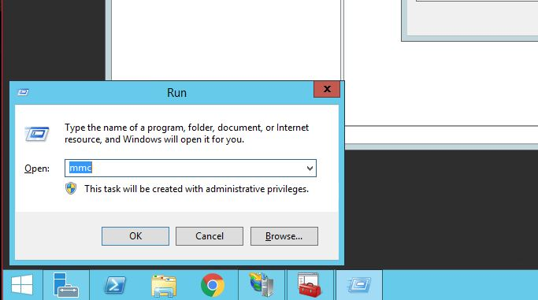

Welcome to IIS CSR Request’s documentation!¶
Indices and tables¶
Prefix¶
This documentation is for creating a CSR request on a Windows Server environment for IIS and submitting it to the DSA group for processing in order to provide you with a SSL certificate. DSA requires a Custom CSR because they need the SHA256 setting instead of the default one created when creating one via the IIS console.
Creating a CSR on IIS¶
Step 1¶
After logging in to the server, on the your keyboard press on the following:
At the same time press: “Start Button” + “R”
type “mmc”
This will open the following window:
Step 3¶
Click on the following:
Certificates
Add
Select “Computer Account”
Click on Next
Select “Local Computer: (the computer this console is running on)
Click “Finish”
Click on OK
Step 4¶
Drill down:
- Certificates(Local Computer)
- Personal
Certificates
Anywhere in the whitespace Right Click on your mouse to bring up the context menu
In the context menu drill down to and click on “Create Custom Request”
- All Tasks
- Advance Options
Create Custom Request
Step 5¶
- ::
code-block Windows user a